DESTRUCTIBLE COMPONENT
The destruction system which gives artists a lot more freedom is explained below.
Characteristics
It is a ScriptComponent which can be applied to any entity in a scene, as long as that entity has a collision body.
When not given any information, the script will just make the entity disappear after being destroyed. It will also re-appear when the mission resets.
The script can be used to destroy entities in one or more states, with optional sound, particles and dynamic objects spawning in each state.
Any existing prefab that has a DestructibleComponent script (Siege towers, gates, ballistas, ..) will continue to work even when you remove that script. It will only no longer be destructible.
One entity can have multiple DestructibleComponent scripts. E.g. the battering ram is destructible, but it also has individual rooftiles which can be destroyed too. Any damage that is applied to a child will also be applied to the parent(s).
Destroyed prefabs can always be tweaked and improved later without breaking any scenes, because they are not part of the intact entity (They are spawned at runtime).
| EXAMPLE SCRIPT OF SIEGE TOWER |
|---|
| 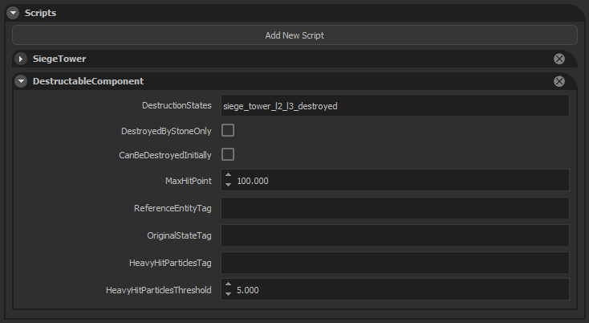 |
| DestructionStates, can be one or more prefabs. Seperated by “,” (comma). |
| DestroyedByStoneOnly, True means that only projectiles from mangonels or trebuchets can damage this entity. False means anything can damage this entity. |
| CanBeDestroyedInititally, defines if this entity can be destroyed already when loading the scene. This is controlled from the campaign map based on a destruction percentage from bombardements. This is generally only true on wall merlons. But it can also be used on aesthetic entities to make the scene look more destroyed from the start. Entities to be destroyed are selected randomly. |
| MaxHitPoint are the starting hitpoints from this entity. Every time the mission resets, the entity will also have its current hitpoints set back to the MaxHitPoints. |
| ReferenceEntityTag is an optional tag for when a DestructionState prefab has a different frame than its parent or to copy animation states. You can add an extra entity (under the entity with the DestructibleComponent script) with a correct frame and supply it with a reference tag, so that the spawned DestructionState prefab will use that frame. If there is no ReferenceEntity, the frame of the entity with the DestructibleComponent script will be used. Reference entity can also be used in special scenarios like a castlegate (opening/closing animations), to get the animation state from the reference entity and apply it to the newly spawned damaged entity. |
| OriginalStateTag is only required when you have multiple DestructionStates. Usually, when an entity is destroyed, we hide the entity which has the script component applied, and spawn a new entity from the DestructionState (without a parent). But for some entities (like gates), we do not want to hide the entire entity because it has to keep functioning as a gate until it is fully destroyed. Using the OriginalStateTag, we will only hide the entity which has this tag applied, and the rest of the hierarchy (particles, standing points, ..) will still be visible. Any DestructibleComponent that has more than one destructionState will spawn the damaged prefabs as child entities. |
| HeavyHitParticlesTag is a tag which can be applied to any child-entities that have a particle-system. These particles will burst once, when a certain amount of damage is taken in a single blow. This particle system is generally shared between all destruction states (It’s not part of the entities that get hidden/spawned). |
| HeavyHitParticlesThreshold is the minimum damage that is required to be taken in a single blow, to trigger particles with HeavyHitParticlesTag tag. |
Effects
Generally, we try to keep the spawned prefabs as small as possible for performance reasons, and also to avoid entity duplication. You have access to the following functionality to add effects:
- On the damaged prefab, when spawned: All particle systems on every entity in the hierarchy, will automatically be bursted once.
- On the damaged prefab, when spawned: All dynamic bodies on every entity in the hierarchy, will automatically receive the impulse from the last hit that destroyed the previous state.
- On the damaged prefab, when spawned: All other meshes on every entity in the hierarchy, will remain in place if they have no dynamic body-flag.
- Part of the entity hierarchy: Heavy hit particles have to be shared between all destruction states, and are played whenever the DestructibleComponent takes HeavyHitParticlesThreshold damage.
- You can play custom animations on DestructibleComponents that have a skeleton (e.g. castlegate being hit by battering ram). The animation progress will transfer to the newly spawned damaged entities.
- You can add a script of type AmbientSoundEmitter on a damaged prefab and provide the sound event. It will automatically play when the entity is spawned.
- Apart from using multiple states, you can also add multiple child entities with DestructibleComponents (e.g. battering ram rooftiles which are individually destructible). Keep in mind that any damage that is applied to a child DestructibleComponent is also applied to every parent in the hierarchy. Currently, we don’t know the performance implications of having too many of these.
Tip
Any hit from a weapon will already play the default impact particle effects and sounds based on the material type (wood, stone, ..), so don’t go too crazy with extra effects.
Warning
Any dynamic mesh that is flying around after spawning a damaged entity, is temporary and should have no physics collision with the player! They should not affect gameplay, because we don’t synchronize these for players in multiplayer.
Examples
Example 1: Wall with breakable merlons
For walls, we can only destroy the merlons and nothing else. They can only be damaged by mangonels/trebuchets and they will only take one hit before being destroyed.
| HIERARCHY OF WALLSEGMENT |
|---|
| 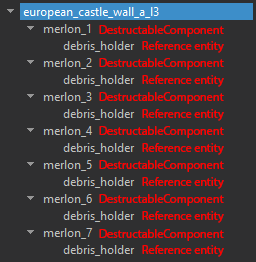This is what our scene hierarchy looks like for a single wall piece. European_castle_wall_a_l3 is an entity with script WallSegment. It does not care if it has destructible children or not. Every merlon is a different child-entity that has its own DestructibleComponent script. Once they are destroyed, they all spawn the same destroyed prefab. Every merlon has a debris_holder entity, which is an empty entity. It just hold a ReferenceEntityTag tag, and the correct frame to spawn the destroyed prefab from (Important because of mesh bending: Location and rotation may change compared to the parent). |
| SCRIPT EXAMPLE OF A SINGLE MERLON |
|---|
| 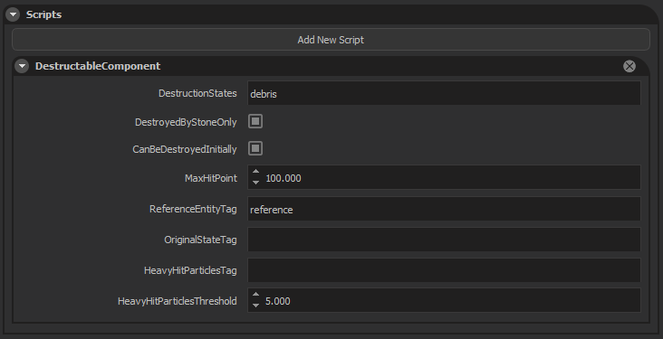Every merlon has the exact same script. They will all spawn the “debris” prefab when destroyed. We decided to make them destroy after a single hit from a mangonel, so they have very low hitpoints. DestroyedByStoneOnly makes them ignore damage from all other weapons (arrows, swords, axes, ..). Because of CanBeDestroyedInititally, these merlons have a chance to already be broken when entering the mission. The merlons need a ReferenceEntity entity to determine the spawn frame for the broken prefabs. |
Origin of wall and merlon pieces
| 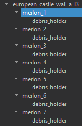 | 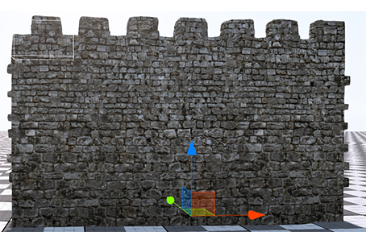Each merlon is a unique mesh, which has its origin point at the bottom of the wall (same as the wall). |
| 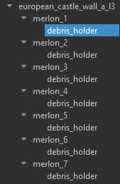 | 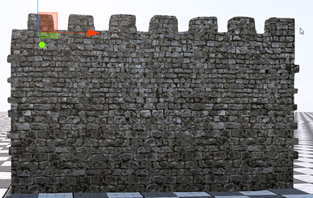Every merlon shares the same destroyed prefab, which has a local origin. debris_holder has a ReferenceEntityTag. |
| 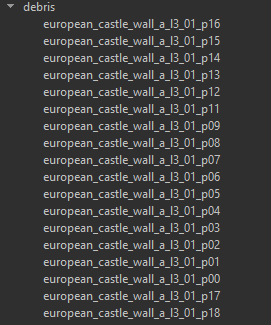 | 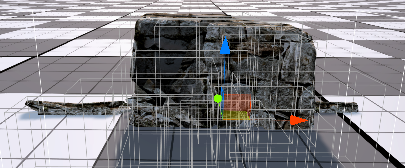Every child of the debris prefab is an entity with flag “dynamic” and has a collision body. When spawned, it will automatically receive the last impulse that the DestructibleComponent received when destroyed. |
Example 2: Siege Barricade
Siege barricades are very simple objects. They are static entities and their only function is to block incoming projectiles. However, they can be destroyed in multiple stages. Each stage looking more destroyed than the one before.
| THE DIFFERENT DESTRUCTION STATES OF A SIEGE BARRICADE |
|---|
| 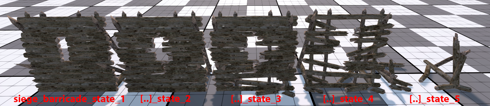Currently, the different states do not have any special particles or dynamic entities, but they can easily be added later on. Entities with the “dynamic” body flag, and particle systems will automatically trigger when spawned. |
Tip
Every stage of the destroyed barricade has its own unique collision body as well. This allows people to shoot arrows more easily through the later destructions, and also move through state_5.
| HIERARCHY OF SIEGE BARRICADE IN SCENE | SIEGE BARRICADE SCRIPT COMPONENT |
|---|---|
| 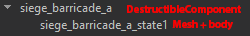 | 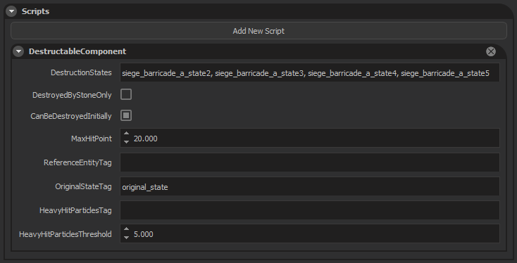 |
siege_barricade_a is an empty parent. It just holds the script.
siege_barricade_a_state1 is the actual mesh + body and has the “original_state” tag. When the barricade takes enough damage, siege_barricade_a_state1 will be made invisible, the next damaged prefab will be spawned and added to siege_barricade_a as a child. This is important because the DestructibleComponent needs to be informed of hits, and it can only do that if it has a (visible) collision body on itself or on a child.
the last state (state_5 in this case) will be spawned when the entity has 0 health (fully destroyed). The other ones will be used in between MaxHitPoints and 0.
When the mission is reset (Health is reset to MaxHitPoint), the original entity (entity with tag “original_state”) will be made visible again.
Every DestructionState prefab has the same origin and rotation, so we don’t have to use a ReferenceEntity.